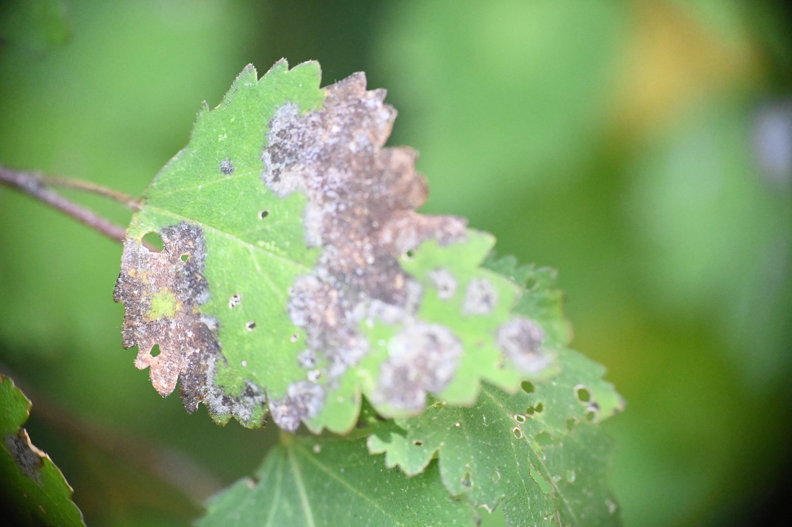

← Toutes les fiches · Maladie · champignon
Erysiphe, Leveillula, Microsphaera, Sphaerotheca

Maladies fongiques courantes causées par plusieurs genres. Le champignon qui cause le blanc sur une espèce végétale n'en atteint généralement pas une autre. Ce sont des parasites obligatoires : ils ont besoin de plantes vivantes. Le champignon forme un réseau d'hyphes à la surface de la feuille ou de la tige et puise ses nutriments dans les cellules de l'épiderme. Les conidies se forment en longues chaînes sur de courts filaments dressés, d'où l'aspect duveteux.
Les conidies ont besoin d'une humidité relative de 95 % pendant plus de 3 à 4 heures pour germer et pénétrer. Des conidies mûres peuvent être libérées 48 heures après l'inoculation. Les courants d'air et les mouvements d'air turbulents (portes ouvertes, ventilateurs mal réglés) favorisent l'infection et la dissémination, de même que les épisodes de feuillage mouillé. Une humidité relative élevée ne suffit pas à elle seule.
Inspecter feuillage et fleurs chaque semaine, en insistant sur les cultures sensibles et les endroits typiques, par exemple près des portes.
Nombreuses plantes ornementales et légumières, chaque champignon ayant ses hôtes.
Fiche du guide Parcelle, version 2026-11-15b. Aucune recommandation de traitement. Les publications de l'Ontario sont écrites pour l'Ontario.